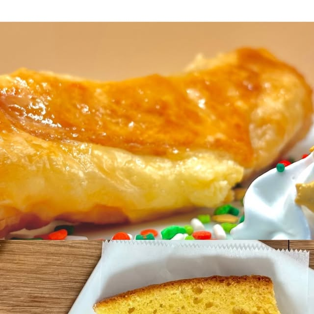
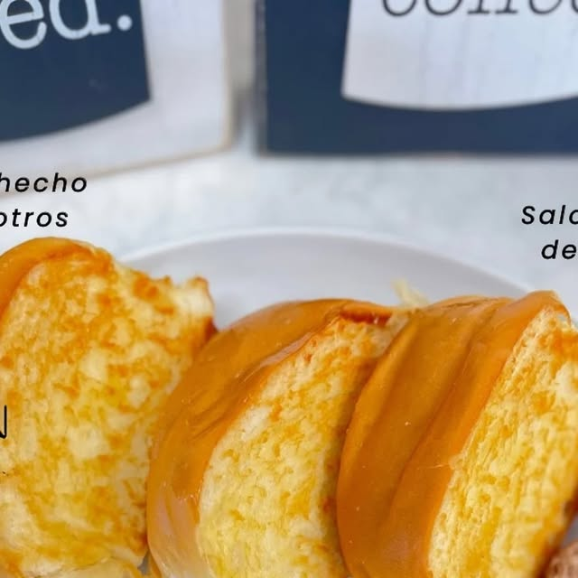
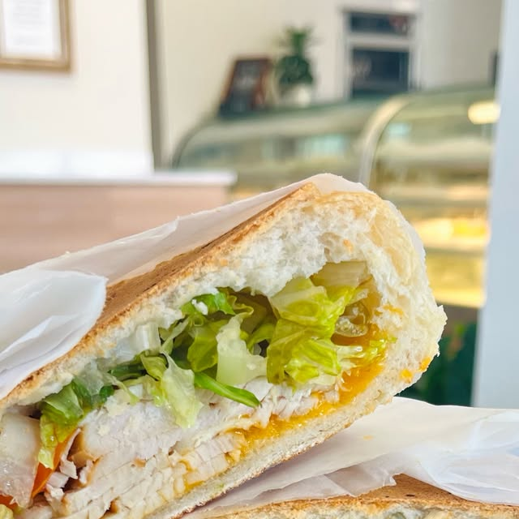
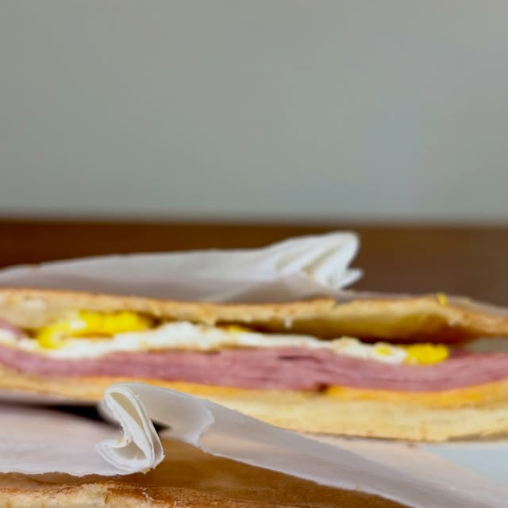
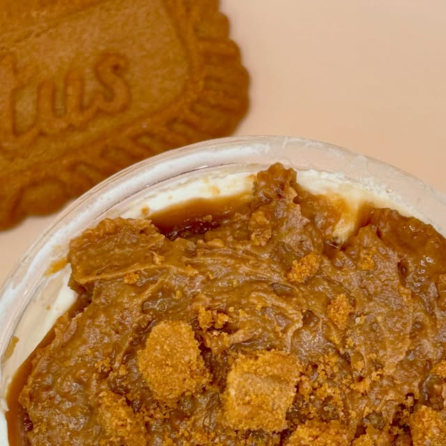
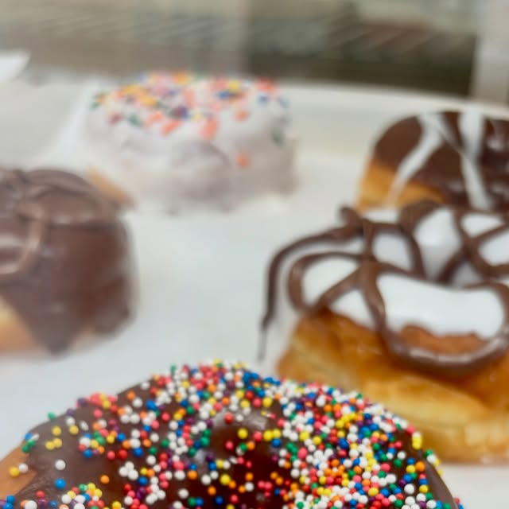
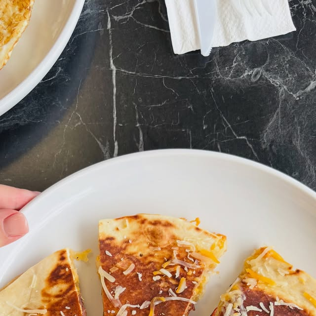
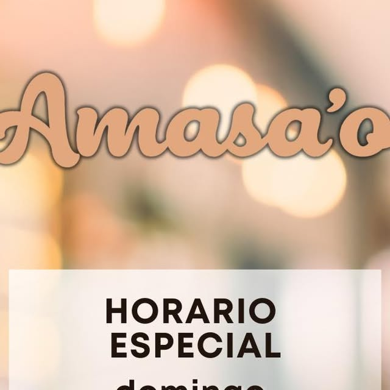
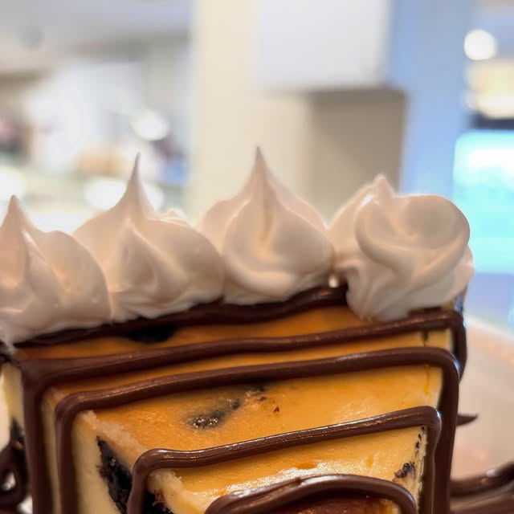

Hecho a mano, con amor
Panadería artesanal en Bayamón. Pan fresco hecho con las manos y el corazón.

Lo que hacemos

Suave, esponjoso y recién horneado cada mañana.

El clásico pan de manteca boricua.


Dulces hechos en casa para acompañar el café.

Galletas crujientes de varios sabores.


Strawberry guava y más especialidades.
Galería



Quiénes somos
Amasao Panadería y Repostería en Bayamón: pan artesanal hecho con amor. Pan sobao, galletas, strawberry guava y más. AA26 Cll India, Bayamón. 787-963-0822.
Hablar con nosotrosPreguntas frecuentes
Estamos en Bayamón, Puerto Rico.
Panadería artesanal y más: Pan sobao, Pan de manteca, Repostería.
Escríbenos por WhatsApp al 787-963-0822 o llena el formulario de contacto y te respondemos por WhatsApp.
Sí, síguenos en Instagram como @@amasaopanaderia.
Sí, pan fresco artesanal todos los días en Bayamón. Llámanos al 787-963-0822.
Amasao · Orden de contacto
Llama y haz tu pedido de pan fresco
* presenta este ticket y salúdanos *